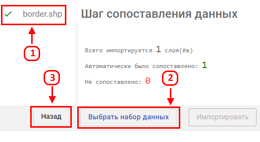
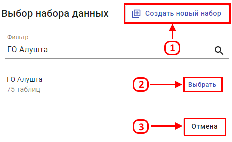

Для осуществления импорта данных необходимо:
-
Подготовить zip-архив с shape файлами, учитывая допустимые системы координат - СК-42 в проекции Гаусса-Крюгера,
WGS84 -геодезическая система координат на эллипсоиде WGS843, WGS84 Web Mercator. Имена файлов в архиве не должны
содержать кириллические символы.
- Открыть проект, в который требуется добавить новые файлы.
-
Нажать на кнопки вызова меню и импорта данных в указанной последовательности.

- Загрузить заранее подготовленный zip архив с shape файлами и нажать кнопку «Далее».
-
Для отмены импорта данных нажать на кнопку «Отменить импорт».

-
После загрузки zip архива на экране появляется окно «Шаг сопоставления данных». С левой стороны появляется кнопка,
название которой совпадает с названием архива shp- файлов (1). Необходимо на неё нажать.
-
В появившемся окне необходимо сопоставить слои и настроить отображение их атрибутивной таблицы. К примеру, некоторые
атрибуты можно не импортировать. Далее следует осуществить выбор набора данных (2). В случае необходимости отмены
импорта данных стоит нажать на кнопку «Отмена».

-
Набор данных имеет такое же название, что и сам проект, в который необходимо добавить данные. Выбор набора данных
осуществляется с помощью сортировки. Для этого следует в строке Фильтр (1) ввести название проекта. Если проект
новый, то необходимо создать новый набор (2). В случае необходимости отмены созданного набора данных стоит нажать на
кнопку «Отмена»(3).

- После осуществления выбора набора данных нажать на кнопку «Импортировать».